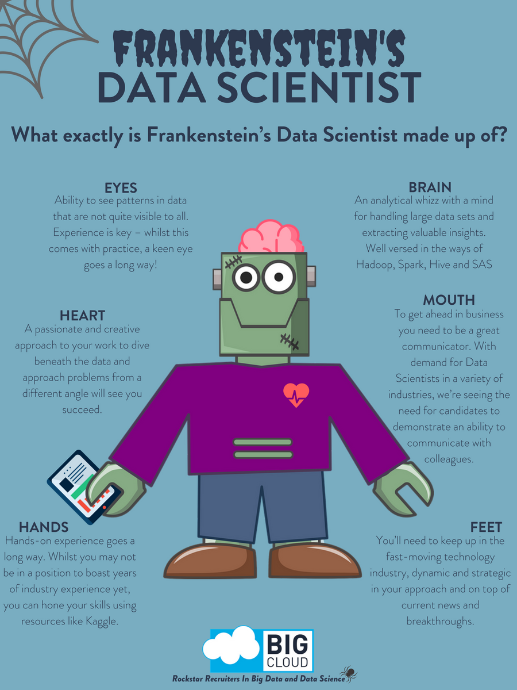

What is a Data Scientist?

What is a Data Scientist?
Me
- High School Valedictorian
- UCI - Pure Math BS & minor in Stats
- Mathnasium Center Director
- MS in Stats (2017-19)
Irrelevant, but fun facts:
Teach…Sing…Garden, Horticulture, Insects
Background Transitions
You can override background transitions per-slide.
<section data-background-transition="zoom">Background Transitions
Different background transitions are available via the backgroundTransition option. This one's called "zoom".
Reveal.configure({ backgroundTransition: 'zoom' })Pretty Code
function linkify( selector ) {
if( supports3DTransforms ) {
var nodes = document.querySelectorAll( selector );
for( var i = 0, len = nodes.length; i < len; i++ ) {
var node = nodes[i];
if( !node.className ) {
node.className += ' roll';
}
}
}
}
Code syntax highlighting courtesy of highlight.js.